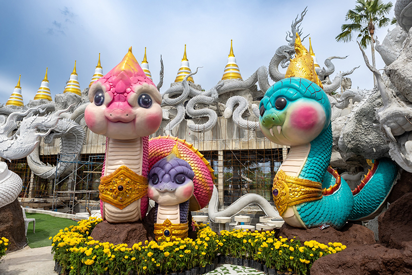
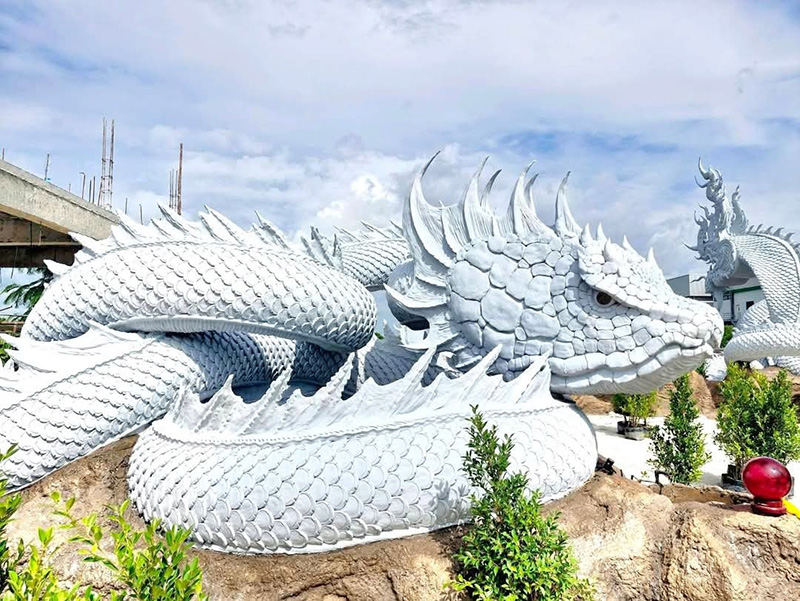
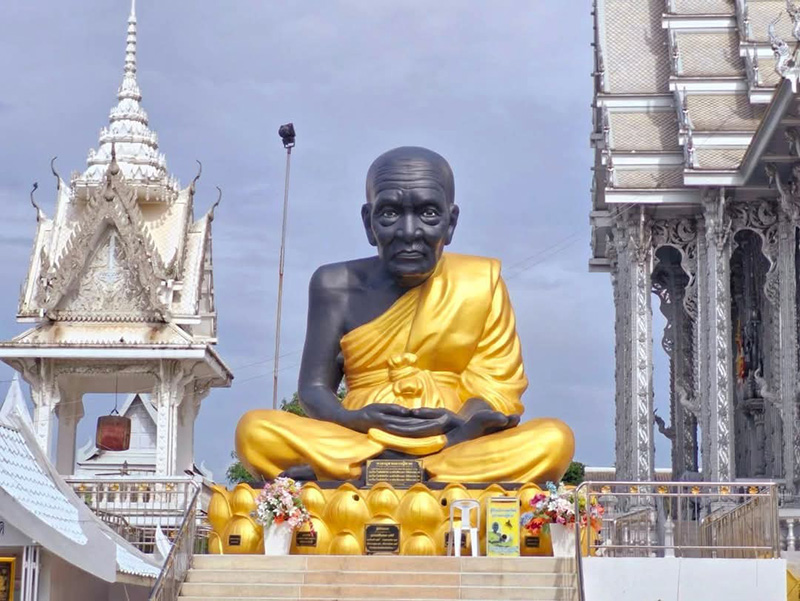

วัดดอนใหญ่
“พญาน้อล” หรือ “พญานาคน้อย” แห่งวัดดอนใหญ่ กลายเป็นแลนด์มาร์กสายมูรุ่นใหม่ที่โด่งดังบนโซเชียล ด้วยรูปลักษณ์สุดน่ารัก สีสันสดใส และดีไซน์คล้ายการ์ตูน ต่างจากพญานาคแบบเดิมที่คุ้นตา เบื้องหลังความน่ารักของพญาน้อล ไม่ได้มีแค่ความแบ๊วสะดุดตา แต่ยังแฝงไว้ด้วยความเชื่อและพลังศรัทธาที่ลึกซึ้งตามตำนานพญานาค พญานาคน้อยองค์นี้เป็นสัญลักษณ์แห่งความบริสุทธิ์ ความเมตตา และการเริ่มต้นใหม่ จึงกลายเป็นที่เคารพบูชาของผู้ศรัทธาไม่น้อย

ปัจจุบัน วัดดอนใหญ่ มี พญานาคน้อยทั้งหมด 3 สี ประดิษฐานรวมกัน โดยแต่ละองค์มีชื่อเฉพาะตัวคือ สีชมพู มีชื่อว่า “เจ้านางน้อย” สีม่วง มีชื่อว่า “เจ้าขุนน้อย” สีเขียว มีชื่อว่า “เจ้าสัวน้อย” องค์พญานาคทั้งสามไม่เพียงแต่มีสีสันสดใสและสวยงาม กลายเป็นจุดสนใจของชาวบ้านและนักท่องเที่ยวเท่านั้น ผู้คนยังมักมากราบไหว้เพื่อขอพรเรื่องโชคลาภ การงาน และความมั่งคั่ง รูปปั้นทั้งสองมีความประณีต สวยงาม สะท้อนศิลปะและวัฒนธรรมท้องถิ่น พร้อมสร้างบรรยากาศศักดิ์สิทธิ์ภายในวัดให้โดดเด่นยิ่งขึ้น

วัดดอนใหญ่ ท้าวเวสสุวรรณ ท้าวเวสสุวรรณที่วัดดอนใหญ่ เรียกได้ว่าเป็นที่นิยมของผู้คนที่เดินทางมากราบไหว้เป็นจำนวนมาก เหตุที่เป็นเช่นนั้นเพราะผู้คนเชื่อว่าการมาไหว้ท้าวเวสสุวรรณที่นี่จะช่วยปลดล็อกหนี้สิน เกิดความคล่องตัวทางการเงิน และเสริมโชคลาภให้เจริญรุ่งเรือง นอกจากนี้ทางวัดยังจัดพื้นที่ให้สักการะอย่างสะดวก มีบรรยากาศสงบและศรัทธาจากชุมชนที่ช่วยเสริมพลังให้ผู้มาเยือนรู้สึกมั่นใจในความศักดิ์สิทธิ์นั่นเอง
วัดดอนใหญ่ บ่วงนาคราช วัดดอนใหญ่ ยังมีไฮไลต์พิเศษที่น่าตื่นตาตื่นใจคือ “บ่วงนาคราช” เส้นทางลอดบ่วงนาคบาศสุดอลังการจำนวน 58 บ่วง ผู้มาเยือนเชื่อว่าการเดินลอดบ่วงเหล่านี้จะได้รับมงคล เสริมโชคลาภ ค้าขายรุ่งเรือง และปัดเป่าสิ่งอัปมงคล โดยบริเวณนี้เป็นส่วนหนึ่งของอุทยานธรรมพญานาคราช ซึ่งมีรูปปั้นพญานาคและกิจกรรมสักการะพญานาคหลายตระกูล แวดล้อมด้วยบรรยากาศศักดิ์สิทธิ์ พร้อมพิธีเจิมฝ่ามือ สวดมนต์ และอาบน้ำมนต์ เพื่อความเป็นสิริมงคลอย่างครบครัน แนะนำว่าควรไปช่วงเย็นถึงค่ำเพื่อชมการประดับไฟสวยงาม
วัดดอนใหญ่ วิธีไหว้สิ่งศักดิ์สิทธิ์ต่าง ๆ การไหว้พระที่วัดดอนใหญ่ ควรเริ่มจากการสักการะพระประธานในอุโบสถเงิน คือ “หลวงพ่อใจดีมั่งมีศรีสุข” ด้วยความเคารพและตั้งจิตอธิษฐาน จากนั้นสามารถเดินชมและไหว้สิ่งศักดิ์สิทธิ์องค์อื่น ๆ เช่น ท้าวเวสสุวรรณ พระพิฆเนศ และพระแม่ธรณี โดยเตรียมดอกไม้ ธูป เทียน และของถวายตามที่วัดกำหนด นอกจากนี้การบริจาคปัจจัยเพื่อบำรุงวัดก็เป็นส่วนหนึ่งของการทำบุญที่ควรทำด้วย ความสำคัญคือความตั้งใจและความเคารพในการปฏิบัติ ถือเป็นการเสริมบุญและความเป็นสิริมงคลให้กับชีวิต